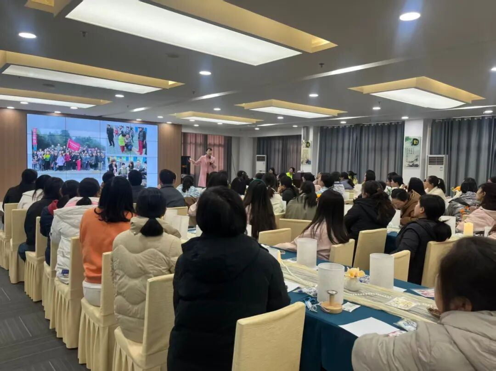
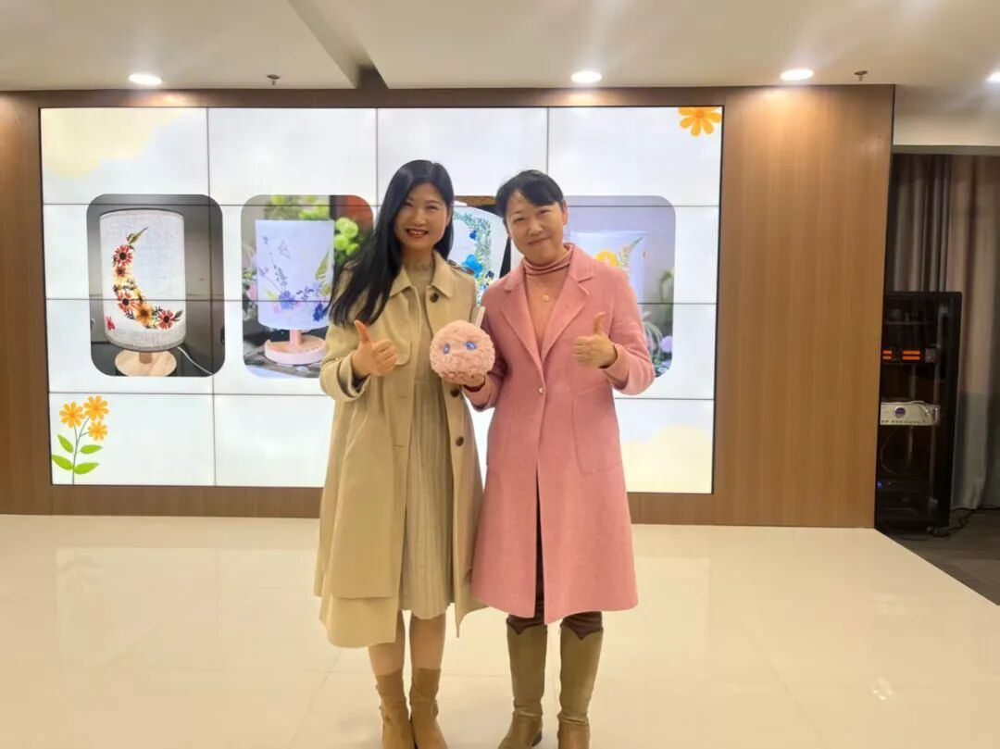

郭博⼠现场演⽰了有爱智能研发的AI情绪疗愈机器⼈“超级球球”。⼀位⼉童福利院的⽼师在体验之后说：“球球⽑茸茸的外形很可爱，听到它萌萌的语⾳，就有放松下来的感觉。”还有⽼师表⽰，⼯作中有很多孩⼦需要照顾，但时间毕竟很有限，如果有球球可以陪孩⼦们聊聊天，既能给⽼师们减轻⼀些压⼒，也能给孩⼦带来快乐。
有爱智能创始合伙⼈、⼼理专家郭凯燕博⼠（右）与湖北省襄阳市⼉童福利院廖院⻓合影郭凯燕博⼠认为，特教⽼师等教育⼯作者稳定的内⼼，是孩⼦们安全感的基⽯。我们研发“超级球球”，正是希望它既能在⽇常中给予倾听和情绪⽀持，帮助⽼师们缓解压⼒，也能成为⼀个积极的媒介，为需要特别关照的孩⼦们带去多⼀份触⼿可及的快乐与陪伴。科技的温度，最终是为了守护每⼀份珍贵的童⼼。
